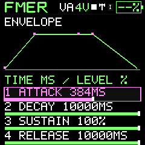
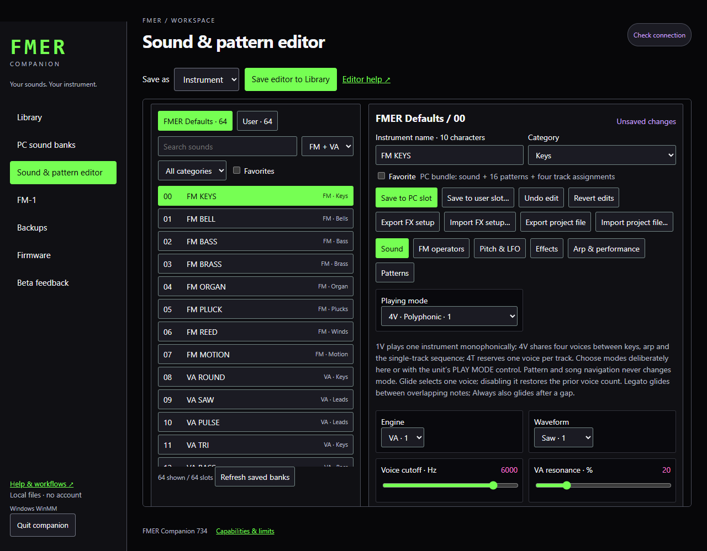
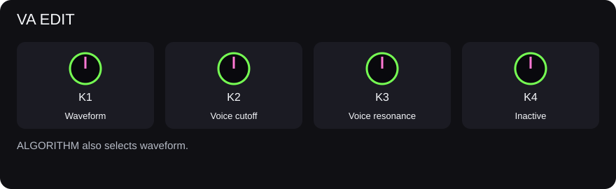

Sound design
VA synthesis and mono glide
Oscillator, voice filter and envelope form the VA instrument; glide is available for mono playing.
The VA engine offers sine, saw, square and triangle waveforms, a voice low-pass filter, ADSR and modulation. The voice filter belongs to the synthesizer; the shared FX filter is a separate stage. Attack, decay and release are stored in milliseconds. Sustain is a held level.
VA EDIT holds waveform, cutoff and resonance. ENV holds attack, decay, sustain and release. LFO holds rate and pitch depth, plus its enable gate; disabling modulation retains its settings for later use.
GLO / VOICE controls mono/poly capacity. GLO / MONO GLIDE selects glide mode, time and contour. Glide applies to a one-voice instrument. Off changes pitch immediately; always glides between notes; legato glides while another note is held. Linear, eased and exponential contours change the transition shape. Last-held-note priority returns toward a still-held earlier key when the newer key is released.
Make a bass
- Choose saw or square and a low octave.
- Use a short attack, moderate decay and lower sustain.
- Lower the voice cutoff and add resonance gradually.
- Set one voice, legato glide and a short transition time.
- Play overlapping notes and then separated notes to hear the difference.
Four-track sequencing budgets one mono voice per track. It does not provide four independent four-voice instruments.



